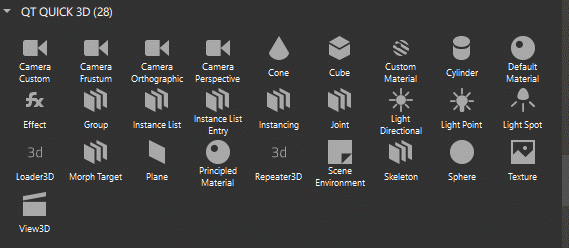

Cameras
A camera is always necessary to view the content of a 3D scene. A camera defines how to project the content of a 3D scene into a 2D coordinate space, which can then be used on a 2D surface. When a camera is present in the scene, it can be used to direct what is displayed in a 3D view.

To add a camera component to your UI, do one of the following:
- Drag a camera component from Components > Qt Quick 3D to the 3D view or to Navigator > View3D > Scene.
- Right-click in the 3D view and select Create > Cameras from the context menu.
Note: You can only create Camera Perspective and Camera Ortographic this way.
If you cannot find the camera components in Components, add the QtQuick3D module to your project, as described in Adding and Removing Modules.
You can use the following components in your scenes to determine camera projection:
- Camera Perspective is the standard camera type, which gives a realistic projection of the scene since distant objects are perceived as smaller. It uses field of view and near and far clip planes to specify the projection.
- Camera Orthographic renders all contents with no perspective. It is ideal for rendering 2D elements because your images are guaranteed to be the right size on the screen, and you can use the z position of components to bring them closer to or take them farther from the camera (z-sorting) with no foreshortening artifacts.
- Camera Frustum enables finer grain control of how the frustum is defined, by setting the number of degrees between the top and bottom or left and right edges of the camera frustum. This is useful when creating asymmetrical frustums.
- Camera Custom provides full control over how the projection matrix is created.
You can position the camera in the scene and set the direction it is facing. The default direction of the camera is such that the forward vector is looking up the +z axis, and the up direction vector is up the +y axis. You can apply transforms to the camera and its parent components to define exactly where your camera is located and in which direction it is facing.
The second part of determining the projection of the camera is defining the field of view (frustum) of the camera that defines which parts of the scene are visible, as well as how they are visible.
You can edit the camera properties in the Properties view.
[Missing image studio-qtquick-camera-properties]
Setting Camera Field of View
Note: If you select Qt 5 as the Target Qt Version when creating your project, the camera properties will be slightly different.
The camera frustum can be obtained by taking a frustum (that is, a truncation with parallel planes) of the cone of vision that a camera or eye would have to the rectangular viewports typically used in computer graphics. The shape of the cone depends on the camera lens that is being simulated. Typically, it is a rectangular pyramid with the top cut off.
The planes that cut the frustum perpendicular to the viewing direction are called the near plane and the far plane. Components in front of the near plane or behind the far plane are not drawn.
The Clip near and Clip far properties determine the position of the near plane and the far plane. We recommend that you place the near and far planes as close to each other as possible to optimize depth accuracy. Components are clipped at pixel level instead of element level. This means that a model crossing a plane may be only partially rendered.
The Field of view (FOV) property specifies the number of degrees between the edges of the camera frustum. The larger the value, the stronger the sense of 3D in your scene. By default, the FOV orientation property is set to use the vertical FOV. This value is the number of degrees between the top and bottom edges of the camera frustum.
The FOV orientation property specifies either a Vertical (the default setting) or a Horizontal orientation for the field of view. The horizontal FOV determines the number of degrees between the left and right edges of the camera frustum. It is automatically calculated based on the aspect ratio of the scene when the FOV orientation is set to vertical. You can set the orientation to horizontal to translate FOV values from graphics tools such as Maya and Blender, which use horizontal FOV by default.
The Horizontal magnification and Vertical magnification properties determine the horizontal and vertical magnification of the camera frustum.
Note: The Horizontal magnification and Vertical magnification properties are not available in Qt 5.
The Frustum culling enabled property determines whether the objects outside the camera frustum will be culled, which means they will not be passed to the renderer.
Note: The Frustum culling enabled property is not available in Qt 5.
The default values are intended to cause anything within the view of the camera to be rendered. Aside from special clipping effects, you may need to adjust these values to more closely contain your content for better results with ambient occlusion or with effects that use the depth buffer of the camera, such as the depth of field effect.
Note: Orthographic cameras don't have the FOV property.